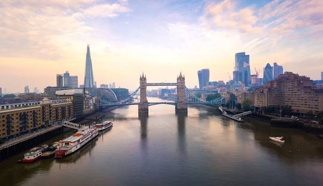

Londres
Londres é a capital da Inglaterra.
É cidade mais populosa do Reino Unido, com mais de 10 milhões de pessoas.

Redimencionando as informações...
Londres é a capital da Inglaterra.
É cidade mais populosa do Reino Unido, com mais de 10 milhões de pessoas.
Paris é a capital da França
A população da área metropolitana, que inclui a cidade e seus arredores, é consideravelmente maior, ultrapassando os 12 milhões de pessoas.

Tóquio é a capital do Japão.
Sua população estimada é de mais de 37 milhões de pessoas.